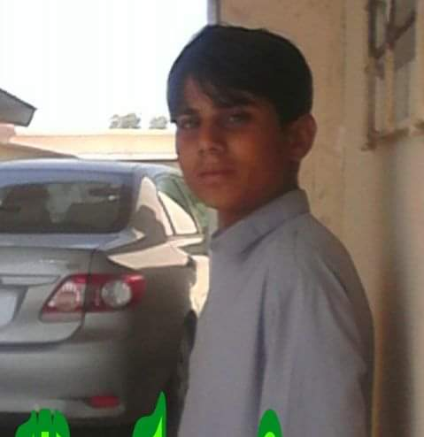

Our top students
Mazar khalil
Mazar khalil is the one of the topper of oxford-school. he is in class 10th.
he pass his other all classes with superb numbers and in current he gives
his boardn exms and he got good numbers. he is the light of oxford-school..
Arif faqheer
Arif faqheer is the one of the topper of oxford-school. he is in class 10th.
he pass his other all classes with superb numbers and in current he gives
his boardn exms and he got good numbers. he is the light of oxford-school..

Tahir shad
Tahir shad is the one of the topper of oxford-school. he is in class 10th.
he pass his other all classes with superb numbers and in current he gives
his boardn exms and he got good numbers. he is the light of oxford-school..

Qasim baloch
Qasim baloch is the one of the topper of oxford-school. he is in class 10th.
he pass his other all classes with superb numbers and in current he gives
his boardn exms and he got good numbers. he is the light of oxford-school..
.jpg)
Zahid murad
Zahid murad is the one of the topper of oxford-school. he is in class 10th.
he pass his other all classes with superb numbers and in current he gives
his boardn exms and he got good numbers. he is the light of oxford-school..
Kamran Baloch
Kamran Baloch is the one of the topper of oxford-school. he is in class 10th.
he pass his other all classes with superb numbers and in current he gives
his boardn exms and he got good numbers. he is the light of oxford-school..
Mazar khalil
Mazar khalil is the one of the topper of oxford-school. he is in class 10th. he pass his other all classes with superb numbers and in current he gives his boardn exms and he got good numbers. he is the light of oxford-school..
Arif faqheer
Arif faqheer is the one of the topper of oxford-school. he is in class 10th. he pass his other all classes with superb numbers and in current he gives his boardn exms and he got good numbers. he is the light of oxford-school..
Tahir shad
Tahir shad is the one of the topper of oxford-school. he is in class 10th. he pass his other all classes with superb numbers and in current he gives his boardn exms and he got good numbers. he is the light of oxford-school..
Qasim baloch
Qasim baloch is the one of the topper of oxford-school. he is in class 10th. he pass his other all classes with superb numbers and in current he gives his boardn exms and he got good numbers. he is the light of oxford-school..
Zahid murad
Zahid murad is the one of the topper of oxford-school. he is in class 10th. he pass his other all classes with superb numbers and in current he gives his boardn exms and he got good numbers. he is the light of oxford-school..
Kamran Baloch
Kamran Baloch is the one of the topper of oxford-school. he is in class 10th. he pass his other all classes with superb numbers and in current he gives his boardn exms and he got good numbers. he is the light of oxford-school..